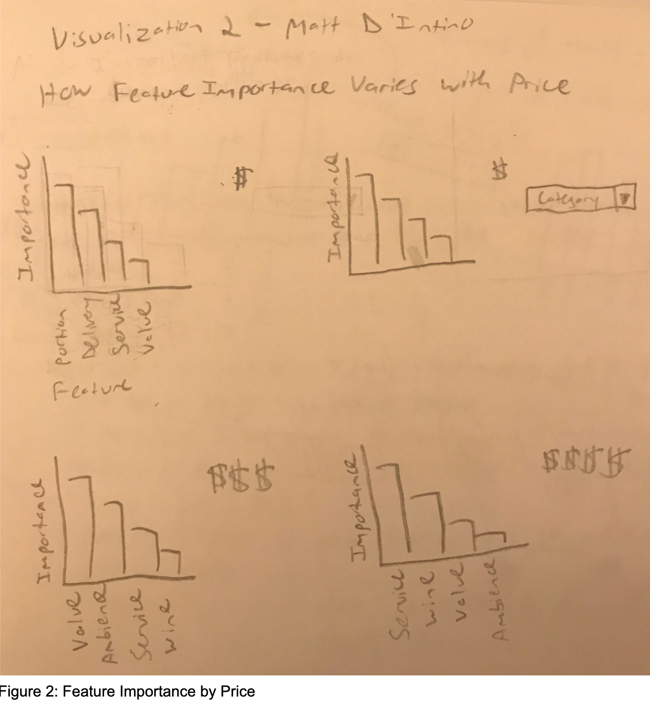

Text Analysis of the Yelp Dataset
Matt D’Intino & Victor Liang DS 5500 April 2019
Motivation:
A restaurateur looking to open a new restaurant or expand an existing restaurant to a new location is faced with the following problem: “what type of restaurant would have the highest success in this location, or what location would make this type of restaurant the most successful?” Using text reviews curated by the website Yelp, this study investigates the effects of location and restaurant type on a reviewer’s rating of a restaurant. The hypothesis being tested is that users in one American city will rate restaurants of a certain type differently than users in another American city, and these ratings are a reasonable indication of the restaurant’s success.
Data Analysis:
This project utilized a dataset cultivated by Yelp and made available on Kaggle (https://www.yelp.com/dataset/documentation/main) to build multiple machine learning algorithms and resulting visualizations. Yelp is a website that allows for users to leave reviews on consumer businesses so that other potential customers have an idea of what he or she might get if they decide to engage with the given business. These reviews involve a text description and a star rating from 1-5. The Yelp dataset contains multiple json files, but only two were used in this study: “business” and “review”. The business file contains information about the businesses themselves. The relevant fields from the business file for this study are ‘city’, which describes the business’ location, and ‘category’, which returns a list of traits that describe the business. An example ‘category’ field is as follows: [‘Sushi Bars’, ‘Restaurants’, ‘Japanese’]. As previously mentioned, the review file contains the actual text of a user review, as well as a star rating on a scale of 1-5, 1 being the worst and 5 being the best. Both the business file and the review file contain a ‘business_id’ field, which allows for joining the reviews with the associated business.
Example records:
Business:
 Review:
Review:
 The business.json file was loaded and merged with the review.json using an inner join. The join result contained data from a wide array of establishments from nail salons to plumbers to restaurants, so it was filtered to only contain records that had the string “Restaurants” in the ‘category’ column. This filter operation left approximately 60,000 restaurant-associated text reviews.
The business data was heavily dominated by a small number of cities. For example, there were thousands of records from Las Vegas, but none from New York City. For this reason, this study pivoted from focusing on the entire United States to specific cities with sufficient data, namely Las Vegas NV, Charlotte NC, Madison WI, Phoenix AZ, and Pittsburgh PA.
The business.json file was loaded and merged with the review.json using an inner join. The join result contained data from a wide array of establishments from nail salons to plumbers to restaurants, so it was filtered to only contain records that had the string “Restaurants” in the ‘category’ column. This filter operation left approximately 60,000 restaurant-associated text reviews.
The business data was heavily dominated by a small number of cities. For example, there were thousands of records from Las Vegas, but none from New York City. For this reason, this study pivoted from focusing on the entire United States to specific cities with sufficient data, namely Las Vegas NV, Charlotte NC, Madison WI, Phoenix AZ, and Pittsburgh PA.
Task Analysis:
The goal of this study is to produce a model and visualization to communicate how successful a potential restaurant would be in a specific area. To do this, a model should be built whose output is an expected star rating (1-5) for a restaurant based on a list of attributes and a sample description, to serve as an analogous review, as input. The hypothesis being tested expects that these scores will vary by location, so one element of the visualization should involve entering a list of categories and producing a bar chart indicating expected star ratings in different cities. This visualization should also contain model outputs that show how much certain restaurants attributes contribute to success in different areas of the US.
 This visualization will primarily be developed for the “present” type of consumption. It will use simple visual encodings to show how the success of similar restaurants change with location, as well as which restaurant attributes most contribute to success or failure. These tasks are linked to the “present” concept because they involve looking to communicate high level trends within the data. The primary consumer of the visualization will be restaurateurs looking to either expand a current restaurant to a new US location, or to open up a totally new restaurant in a given city. In both scenarios the required information will be provided by showing what types of restaurants are expected to succeed in which locations.
This visualization will primarily be developed for the “present” type of consumption. It will use simple visual encodings to show how the success of similar restaurants change with location, as well as which restaurant attributes most contribute to success or failure. These tasks are linked to the “present” concept because they involve looking to communicate high level trends within the data. The primary consumer of the visualization will be restaurateurs looking to either expand a current restaurant to a new US location, or to open up a totally new restaurant in a given city. In both scenarios the required information will be provided by showing what types of restaurants are expected to succeed in which locations.
Model Description:
Linear Regression
Linear regression is a machine learning technique that involves producing a numerical predicted output on a linear scale. In this case, the predicted output will be replicating Yelp’s 1-5 star ratings, and will use text features from reviews and location and type of the restaurant to build its predictions. To begin this process, the text, city, and category list were extracted and split into train and test sets using an 80%/20% breakdown. A TF-IDF vectorizer was then trained on the text of the training set with ‘min_df’ set to 0.01. The text from both train and test sets was then transformed by the TF-IDF vectorizer.
Next, a one-hot encoding approach was used on the ‘categories’ field to search for specific restaurant types. The categories chosen for this dataset were ‘Pizza’, ‘Mexican’, ‘Chinese’, ‘Italian’, and ‘Vietnamese’ because they were sufficiently common and distinct. DataFrame columns representing each of these common categories were filled with 0’s and appended to the train and test datasets. Then each row was searched for each category using the same str.contains approach that was implemented for the restaurant filtering. If the category was found, the appropriate column value was replaced with a 1. The train and test sets were then converted to csr_matrices.
The city field in both train and test sets was converted to all lower case to control for simple typographical data quality issues, and the training set’s city field was fit to the sklearn.preprocessing OneHotEncoder. This model was then used to transform both the train and test sets’ city fields. The city names were then stored in an array using the enc.categories_ method to be used to encode city values when running the model on new input. All three outputs, the tf-idf matrix, the one-hot encoded city, and the one-hot encoded category matrices were joined using the hstack function from scipy.
Next, a grid search was run using alpha values of [0.0001, 0.001, 0.01, 0.1] for three types of linear regression: ridge, lasso, and elastic net. The alpha parameter was the only variable for the grid search due to its consistency across all three of the chosen models. The grid search was run with 10 fold cross validation, n_jobs=20, and scoring=”r2”. Using ‘mean_test_score’ and ‘std_test_score’ from the ridge_grid function’s performance on the train set, ElasticNet(alpha=0.0001) was determined to be the best model. This model produced an r2 score of 0.6210477250037865 when comparing its predictions on the test set to the test set’s true values.
This model was then embedded in the web interface, along with the associated tf-idf vectorizer and one-hot encoding methods to manipulate the user input to match that of the train and test sets. These objects were stored and accessed using the ‘pickle’ library. Because the models being used were linear regression, the model will in some scenarios predict a score outside of Yelp’s 1-5 range. In these cases, simple if/else logic was applied to store an prediction less than 1 as 1, and any prediction more than 5 as 5.
LDA Model:
Latent Dirichlet Allocation (LDA) is a unsupervised technique that can be used to discover the topics of a corpus or groups of documents. LDA aims to identify segregated clusters of words that occur together. These grouping of words becomes a “topic”. One downside of LDA is that often several adjectives can appear in the top words of the topics. However this study believes these adjectives are not needed given the star system of the reviews. Instead, in the preprocessing phase, the text was filtered down to the nouns of the review and the star system was used to infer the sentiment associated with that noun. For example, for the “service” topic, a review with 2 stars or less will reveal it is about bad service, and reviews with 4 stars or more would denote good service.
For preprocessing, the text was tokenize, punctuations and digits were removed, the text was filtered down to nouns and words were stemmed. Using grid search, it was found that the model works best trying to fit 10 topics and with a learning decay of 0.5. Three models were built, one with all of the restaurants reviews, one with good reviews (4 or more stars) and one with bad reviews (2 or less stars). Each model weight each word in a differently depending on how they are related to each topic. Below you are can see the top ten words related to each topic in the three models.
Using these models, we can predict the topic of each reviews. Each review would be broken down and then scored for each topic. The prevalent topic is the topics that is most heavily weighed for the review.
Design Process:
Phase 1 - Visualization Sketches:

The first visualization uses a line mark and position on a shared axis channel to accomplish task 3. It shows the expected star rating that a restaurant of its category would score in the most common cities in the Yelp dataset. It also includes a dropdown to generate the same visualization for a different category. This category is then applied to other visual elements, including a choropleth, which uses line and area marks with color channels to show the category’s popularity throughout the country and a chart using line marks and position on a shared axis channel showing the most important features for that category, accomplishing task 2. The next visualization uses a line mark and position on a shared axis channel to accomplish task 4. The goal of this visual is to show the most significant features of a restaurant category at each of Yelp’s 4 price points, while allowing for an interactive category dropdown menu. The final visualization shows how polarizing certain restaurant attributes. Would a successful restaurants do better if it was less or more polarizing to the audience? This is involved in tasks 2 and 3.
Phase 2 - Computer Generated Visuals:
Overall, the goals from the visual updates were to integrate the sketches shown in Figures 1-3 into a cohesive final product that uses visualization to support three primary modes: explore, compare, and analysis. Figure 4 will make up the explore mode with little to no change from its representation in Figure 1. Figure 3 will also be integrated into the explore mode as a means of drilling into what features are common in positive reviews for a certain restaurant category.
Figure 2 involved investigating how different restaurant price points would affect user reviews. Unfortunately the Yelp dataset had insufficient data on the price range of the restaurants, so the final visualization will not have this element. The final visualization’s compare mode will be similar to Figure 2, but instead of varying by price, it will vary by city to show how different restaurant categories are perceived and evaluated in different locations.
The analysis mode will allow users to enter a simulated text review for a certain restaurant type in a certain location, and the webpage will generate a predicted star value for the restaurant the review describes. This would also be good to apply to reviews from other sites like Twitter that don’t have a standard rating system. This feature will allow the target audience (restaurateurs) to develop potential restaurants by analyzing what attributes contribute to a restaurant’s success.
Useability testing indicated that the visuals needed a set of instructions for the user to know what he or she was looking at, and to know how to use the visual itself. This meant adding headers and more intuitive titles to each page. This phase of the visualization development also led to the removal of the choropleth because the lack of data was confusing to users. Instead of a choropleth, a simpler bar chart was implemented that only focused on cities with sufficient data.
Final Visualization
The landing page of the Final Visualization is the “Explore” tab, which prompts a user to select a restaurant category in order to see an overview of the analyzed data for that category. A scatter plot is shown that displays the breakdown of positive vs. negative review counts for each category. A review with a score of 4 or higher is considered positive, and a 3 or lower is negative.
Selecting a category from the dropdown and pressing evaluate brings up three new interactive visualizations. The “Cities by Review Types” scatter plot shows a similar positive vs. negative review counts, but examines how these values change by city when only processing restaurants of the selected category. The “Predicted Star Rating by City” bar graph shows how a sample review with the text “This is a good review” is predicted to be rated across five US cities when associated with the selected restaurant category. Finally the “Star Rating Distribution by City” bar graph shows a distribution of star ratings 1-5 for the same five US cities for the selected category.
These three visuals are all linked together using mouse-hover interactivity. Hovering the mouse over a data element of each visualization will highlight that element in the visual itself, but will also highlight elements of that same city in the two other visuals. Each visual will also show the specific values shown on mouse hover, for example the “Predicted Star Rating by City” plot shows the city and exact predicted score on mouse hover. From here users can select a different category from the dropdown, click evaluate, and observe how these visuals change for each type of restaurant.
Clicking on the “Compare” button at the top of the page will bring up the “Compare” phase of the visualization, which utilizes the LDA topic modeling portion of the project. The “Review Topic Comparison” bar chart shows frequency counts of the most common topics for the selected category in the data. If no category is selected, this bar chart shows the most common topics across all of the data. Selecting a category filters the search to only reviews for restaurants of that category. Users can also choose to remove or add the five cities that have been provided. Scrolling down, the user will find this same approach, but divided into positive and negative reviews, to show which topics are commonly associated with positive and negative sentiments. The same hover-interactivity to show specific cities and frequency counts is supported for these two topics as the larger plot above.
All of the visuals so far are using very straight-forward marks and channels. Either lines or points for marks, and position on shared axes and color channels. The color channel is used to differentiate categorical data, such as the “Categories by Review Types” scatter plot or the “Star Rating Distribution by City” grouped bar chart. This allows for maximum comprehension for the user and avoids any unnecessary complexity in the visualization that would distract from the data.
Finally, clicking on the analysis tab will bring users to the “Analysis” page. This portion of the visual is simply a text box and two drop downs. This page allows users to enter a sample review of a restaurant, and to select the restaurant’s category and city. Once the user presses evaluate, the LDA and linear regression models are applied to predict the score for the review and the primary topic that the review is focused on. These results are displayed at the top of the page, with the option to enter more reviews to observe how changing category and city can affect the predicted outcomes.
Conclusion:
The hypothesis that this study sought to prove was that users in one American city will rate restaurants of a certain type differently than users in another American city. This was proven via the linear regression model, which had a modest r2 score of over 0.6, and was visualized through the “Explore” tab, which showed how different cities were predicted to rate certain restaurants higher than others. The association between city, category, and review topics also visualized via the ‘Compare’ tab, where certain cities focused on certain topics more than others in their restaurant review.
In addition, we see different topics in comparison between good and bad reviews. The topics that are shared in common are Time & Place, Food, Nightlife, Hotel/Resort, Service, Car Service and Salon. Staff is a mentioned topic for good reviews, and not mentioned enough in bad reviews. This supports that having a professional staff is good for reviews. Interestingly, different food types are prevalent in the topics,
The combination of the various elements of these visuals would be of great help to restaurateurs who are looking for what makes a restaurant successful in a certain city. Not only are restaurant types ranked in order of their predicted success, but specific topics from text reviews are highlighted to show what makes restaurants of that type in that city achieve high or low review scores.